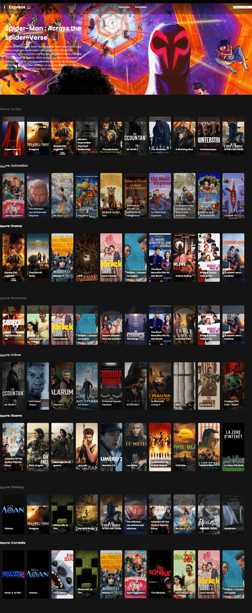

Ex'Press est un projet développé en groupe dans le cadre de ma formation à la Normandie Web School.
En tant que chef de projet, j'ai eu l'opportunité de diriger une équipe pour créer un site où les utilisateurs peuvent découvrir une large sélection de films.
Chaque film peut être noté, commenté et ajouté à la bibliothèque personnelle de l'utilisateur. Ce projet a été conçu pour nous initier au développement web et à l’utilisation de technologies modernes tout en travaillant en équipe.
Ex'Press vise à offrir une expérience utilisateur immersive et à enrichir les passionnés de cinéma.
